화공기사(구) (2021-05-15 기출문제)
1과목: 화공열역학
1. 벤젠과 톨루엔으로 이루어진 용액이 기상과 액상으로 평형을 이루고 있을 때 이 계에 대한 자유도는?
- 0
- 1
- 2
- 3
(정답률: 76%)

2. 어떤 화학반응에서 평형상수 K의 온도에 대한 미분계수가 다음과 같이 표시된다. 이 반응에 대한 설명으로 옳은 것은?
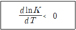
- 흡열반응이며, 온도상승에 따라 K의 값이 커진다.
- 흡열반응이며, 온도상승에 따라 K의 값은 작아진다.
- 발열반응이며, 온도상승에 따라 K의 값은 커진다.
- 발열반응이며, 온도상승에 따라 K의 값은 작아진다.
(정답률: 74%)
3. 다음 설명 중 맞는 표현은? (단, 하첨자 i(i): i성분, 상첨자 sat(sat): 포화, Hat(＾): 혼합물, f: 퓨개시티, ϕ: 퓨개시티 계수, P: 증기압, x: 용액의 몰분율을 의미한다.)
- 증기가 이상기체라면 ϕisat= 1이다.
- 이상용액인 경우
 이다.
이다. - 루이스-랜덜(Lewis-Randall)의 법칙에서
 이다.
이다. - 라울의 법칙은
 이다.
이다.
(정답률: 57%)
4. 냉동용량이 18000 Btu/hr인 냉동기의 성능계수 성능계수(Coefficient of performance; w)가 4.5일 때 응축기에서 방출되는 열량(Btu/hr)은?
- 4000
- 22000
- 63000
- 81000
(정답률: 43%)
5. 2성분계 혼합물이 기-액 상평형을 이루고 압력과 기상조성이 주어졌을 때 압력과 액상조성을 계산하는 방법을 "DEW P"라 정의할 때, DEW P에 포함될 필요가 없는 식은? (단, A, B, C는 상수이다.)
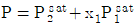
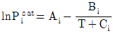
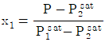
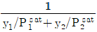
(정답률: 44%)
6. 등엔트로피 과정이라고 할 수 있는 것은?
- 가역 단열과정
- 가역과정
- 단열과정
- 비가역 단열과정
(정답률: 65%)
7. 어떤 물질의 정압 비열이 아래와 같다. 이 물질 1kg이 1atm의 일정한 압력하에 0°C에서 200°C로 될 때 필요한 열량(kcal)은? (단, 이상기체이고 가역적이라 가정한다.)
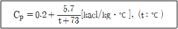
- 24.9
- 37.4
- 47.5
- 56.8
(정답률: 62%)
8. 초임계 유체(Supercritical fluid) 영역의 특징으로 틀린 것은?
- 초임계 유체 영역에서는 가열해도 온도는 증가하지 않는다.
- 초임계 유체 영역에서는 액상이 존재하지 않는다.
- 초임계 유체 영역에서는 액체와 증기의 구분이 없다.
- 임계점에서는 액체의 밀도와 증기의 밀도가 같아진다.
(정답률: 49%)
9. 반데르발스(Van der Waals) 식으로 해석할 수 있는 실제 기체에 대하여
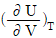
의 값은?- a/P
- a/T
- a/V2
- a/PT
(정답률: 75%)
10. 이성분혼합물에 대한 깁스 두헴(Gibbs-Duhem)식에 속하지 않는 것은? (단, γ는 활성도계수(activity coefficient), μ는 화학포텐셜, x는 몰분율이고 온도와 압력은 일정하다.)
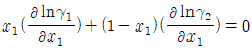
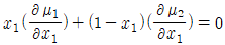
- x1dμ1+x2dμ2=0
- (γ1+γ2)dx1=0
(정답률: 55%)
11. 오토기관(Otto cycle)의 열효율을 옳게 나타낸 식은? (단, r는 압축비, γ는 비열비이다.)
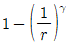
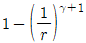
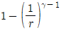
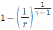
(정답률: 67%)
12. 공기표준 디젤 사이클의 P-V선도는?
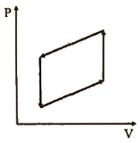
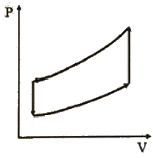
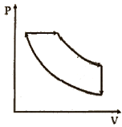
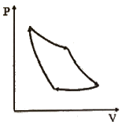
(정답률: 69%)
13. 어떤 이상기체의 정적열용량이 1.5R일 때, 정압열용량은?
- 0.67R
- 0.5R
- 1.5R
- 2.5R
(정답률: 70%)
14. 기체 1mole이 0°C, 1atm에서 10atm으로 가역압축되었다. 압축 공정 중 압축 후의 온도가 높은 순으로 배열된 것은? (단, 이 기체는 단원자 분자이며, 이상기체로 가정한다.)
- 등온＞정용＞단열
- 정용＞단열＞등온
- 단열＞정용＞등온
- 단열=정용＞등온
(정답률: 66%)
15. 열역학 기초에 관한 내용으로 옳은 것은?
- 일은 항상 압력과 부피의 곱으로 구한다.
- 이상기체의 엔탈피는 온도만의 함수이다.
- 이상기체의 엔트로피는 온도만의 함수이다.
- 열역학 제1법칙은 계의 총에너지가 그 계의 내부에서 항상 보존된다는 것을 뜻한다.
(정답률: 68%)
16. 800kPa, 240℃의 과열수증기가 노즐을 통하여 150kPa까지 가역적으로 단열팽창될 때, 노즐출구에서 상태는? (단, 800kPa. 240℃에서 과열수증기의 엔트로피는 6.9976kJ/kg·K이고 150kPa에서 포화액체(물)와 포화수증기의 엔트로피는 각각 1.4336kJ/kg·K와 7.2234kJ/kg·K이다.)
- 과열수증기
- 포화수증기
- 증기와 액체혼합물
- 과냉각액체
(정답률: 46%)
17. 열역학 제2법칙의 수학적 표현은?
- dU=dQ-PdV
- dH=TdS+VdP
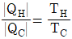
- △Stotal≧0
(정답률: 75%)
18. 기체에 대한 설명 중 옳은 것은?
- 기체의 압축인자는 항상 1보다 작거나 같다.
- 임계점에서는 포화증기의 밀도와 포화액의 밀도가 같다.
- 기체혼합물의 비리얼 계수(virial coefficient)는 온도와 무관한 상수이다.
- 압력이 0으로 접근하면 모든 기체의 잔류부피(residual volume)는 항상 0으로 접근한다.
(정답률: 56%)
19. 고립계의 평형 조건을 나타내는 식으로 옳은 것은? (단, 기호는 각각 G: 깁스(Gibbs) 에너지, N: 몰수, H: 엔탈피, S: 엔트로피, U: 내부에너지, V: 부피를 의미한다.)
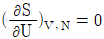
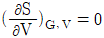
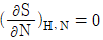
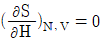
(정답률: 44%)
20. 일정온도와 일정압력에서 일어나는 화학반응의 평형판정기준을 옳게 표현한 식은? (단, 하첨자 tot는 총변화량을 의미한다.)
- (△Gtot)T.P = 0
- (△Htot)T.P ＞ 0
- (△Gtot)T.P ＜ 0
- (△Htot)T.P = 0
(정답률: 74%)
2과목: 단위조작 및 화학공업양론
21. 다음 중 차원이 다른 하나는?
- 일
- 열
- 에너지
- 엔트로피
(정답률: 64%)
22. 미분수지 (differential balance)의 개념에 대한 설명으로 가장 옳은 것은?
- 어떤 한 시점에서 계의 물질 출입관계를 나타낸 것이다.
- 계에서의 물질 출입관계를 성분 및 시간과 무관한 양으로 나타낸 것이다.
- 계로 특정성분이 유출과 관계없이 투입되는 총 누적 양을 나타낸 것이다.
- 계에서의 물질 출입관계를 어느 두 질량 기준 간격사이에 일어난 양으로 나타낸 것이다.
(정답률: 68%)
23. 결정화시키는 방법이 아닌 것은?
- 압력을 높이는 방법
- 온도를 낮추는 방법
- 염을 첨가시키는 방법
- 용매를 제거시키는 방법
(정답률: 48%)
24. 25°C 에서 정용반응열(△Hv)이 -326.1kcal일 때 같은 온도에서 정압반응열(△Hp; kcal)는?
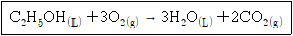
- 325.5
- -325.5
- 326.7
- -326.7
(정답률: 47%)
25. 어떤 기체의 임계압력이 2.9atm이고, 반응기내의 계기압력이 30psig였다면 환산압력은?
- 0.727
- 1.049
- 0.990
- 1.112
(정답률: 48%)
26. 탄산칼슘 200kg을 완전히 하소(煆燒; calcination)시켜 생성된 건조 탄산가스의 25°C, 740mmHg에서의 용적(m3)은? (단, 탄산칼슘의 분자량은 100g/mol이고, 이상기체로 간주한다.)
- 14.81
- 25.11
- 50.22
- 87.31
(정답률: 65%)
27. 어떤 실린더 내에 기체 I, II, III, IV가 각각 1mol씩 들어있다. 각 기체의 Van der Waals ((P+a/V2)(V-b)=RT) 상수 a와 b가 다음 표와 같고, 각 기체에서의 기체분자 자체의 부피에 의한 영향 차이는 미미하다고 할 때, 80°C에서 분압이 가장 작은 기체는? (단, a의 단위는 atm·(cm3/mol)2이고, b의 단위는 cm3/mol이다.)
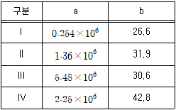
- I
- II
- III
- IV
(정답률: 48%)
28. 25℃ 1atm 벤젠 1mol의 완전연소 시 생성된 물질이 다시 25°C, 1atm으로 되돌아올 때 3241 kJ/mol의 열을 방출한다. 이때, 벤젠 3mol의 표준생성열(kJ)은? (단, 이산화탄소와 물의 표준생성엔탈피는 각각 -394, -284kJ/mol이다.)
- 19371
- 6457
- 75
- 24
(정답률: 46%)
29. 포도당(C6H12O6) 4.5g이 녹아 있는 용액 1L와 소금물을 반투막을 사이에 두고 방치해 두었더니 두 용액의 농도 변화가 일어나지 않았다. 이 때 소금의 L당 용해량(g)은? (단, 소금물의 소금은 완전히 전리했다.)
- 0.0731
- 0.146
- 0.731
- 1.462
(정답률: 34%)
30. 500mL 용액에 10g NaOH가 들어있을 때 N농도는?
- 0.25
- 0.5
- 1.0
- 2.0
(정답률: 63%)
31. 어떤 증발관에 1wt%의 용질을 가진 70℃ 용액을 20000kg/h로 공급하여 용질의 농도를 4wt%까지 농축하려 할 때 증발관이 증발시켜야할 용매의 증기량(kg/h)은?
- 5000
- 10000
- 15000
- 20000
(정답률: 56%)
32. 건조 특성곡선에서 항율 건조기간으로부터 감율 건조기간으로 바뀔 때의 함수율은?
- 전(total) 함수율
- 자유(free) 함수율
- 임계(critical) 함수율
- 평형(equilibrium) 함수율
(정답률: 69%)
33. 어느 공장의 폐가스는 공기 1L당 0.08g의 SO2를 포함한다. SO2의 함량을 줄이고자 공기 1L에 대하여 순수한 물 2kg의 비율로 연속 향류 접촉(continuous counter current contact) 시켰더니 SO2의 함량이 1/10로 감소하였다. 이 때 물에 흡수된 SO2 함량은?
- 물 1kg당 SO2 0.072g
- 물 1kg당 SO2 0.036g
- 물 1L당 SO2 0.018g
- 물 1L당 SO2 0.009g
(정답률: 54%)
34. 2성분 혼합물의 액·액 추출에서 평형관계를 나타내는데 필요한 자유도의 수는?
- 2
- 3
- 4
- 5
(정답률: 52%)
35. 열전도도에 관한 설명 중 틀린 것은?
- 기체의 열전도도는 온도에 따라 다르다.
- 물질에 따라 다르며, 단위는 W/m·℃ 이다.
- 물체 안으로 열이 얼마나 빨리 흐르는가를 나타내 준다.
- 단위면적당 전열속도는 길이에 비례하는 비례상수이다.
(정답률: 55%)
36. 1기압, 300℃에서 과열수증기의 엔탈피(kcal/kg)는? (단, 1기압에서 증발잠열은 539kcal/kg, 수증기의 평균비열은 0.45kcal/kg⋅℃이다.)
- 190
- 250
- 629
- 729
(정답률: 40%)
37. 일반적으로 교반조작의 목적이 될 수 없는 것은?
- 물질전달속도의 증대
- 화학반응의 촉진
- 교반성분의 균일화 촉진
- 열전달 저항의 증대
(정답률: 67%)
38. 벤젠과 톨루엔의 혼합물을 비점, 액상으로 증류탑에 공급한다. 공급, 탑상, 탑저의 벤젠 농도가 각각 45, 92, 10wt%, 증류탑의 환류비가 2.2이고 탑상 제품이 23688.38kg/h로 생산될 때 탑 상부에서 나오는 증기의 양(kmol/h)은?
- 360
- 660
- 960
- 990
(정답률: 38%)
39. 비중이 0.7인 액체를 0.2m3/s의 속도로 수송하기 위해 기계적 일이 5.2kgf·m/kg만큼 액체에 주어지기 위한 펌프의 필요 동력(HP)은? (단, 전효율은 0.7이다.)
- 6.70
- 12.7
- 13.7
- 49.8
(정답률: 29%)
40. 나머지 셋과 서로 다른 단위를 갖는 것은?
- 열전도도÷길이
- 총괄열전달계수
- 열전달속도÷면적
- 열유속(heat flux)÷온도
(정답률: 49%)
3과목: 공정제어
41. 피드백 제어계의 총괄 전달함수는?
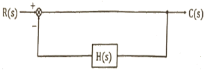
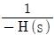
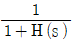
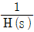
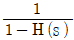
(정답률: 63%)
42. 2차계 공정의 동특성을 가지는 공정에 계단입력이 가해졌을 때 응답 특성에 대한 설명 중 옳은 것은?
- 입력의 크기가 커질수록 진동응답 즉 과소감쇠응답이 나타날 가능성이 커진다.
- 과소감쇠응답 발생 시 진동주기는 공정이득에 비례하여 커진다.
- 과소감쇠응답 발생 시 진동주기는 공정이득에 비례하여 작아진다.
- 출력의 진동 발생여부는 감쇠계수 값에 의하여 결정된다.
(정답률: 34%)
43. 다음의 공정 중 임펄스 입력이 가해졌을 때 진동특성을 가지며 불안정한 출력을 가지는 것은?
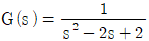
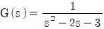
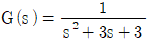
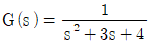
(정답률: 38%)
44. 시정수가 0.1분이며 이득이 1인 1차 공정의 특성을 지닌 온도계가 90°C로 정상상태에 있다. 특정 시간(t=0)에 이 온도계를 100℃인 곳에 옮겼을 때, 온도계가 98°C를 가리키는 데 걸리는 시간(분)은? (단, 온도계는 단위계단응답을 보인다고 가정한다.)
- 0.161
- 0.230
- 0.303
- 0.404
(정답률: 36%)
45. Reset windup 현상에 대한 설명으로 옳은 것은?
- PID 제어기의 미분 동작과 관련된 것으로 일정한 값의 제어오차를 미분하면 0 으로 reset 되어 제어동작에 반영되지 않는 것을 의미한다.
- PID 제어기의 미분 동작과 관련된 것으로 잡음을 함유한 제어오차신호를 미분하면 잡음이 크게 증폭되며 실제 제어오차 미분값은 상대적으로 매우 작아지는(reset 되는) 것을 의미한다.
- PID 제어기의 적분 동작과 관련된 것으로 잡음을 함유한 제어오차신호를 적분하면 잡음이 상쇄되어 그 영향이 reset 되는 것을 의미한다.
- PID 제어기의 적분 동작과 관련된 것으로 공정의 제약으로 인해 제어오차가 빨리 제거될 수 없을 때 제어기의 적분값이 필요 이상으로 커지는 것을 의미한다.
(정답률: 51%)
46. 다음 공정의 단위 임펄스응답은?
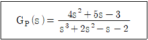
- y(t)=2ｅt+ｅ-t+ｅ-2t
- y(t)=2ｅt+2ｅ-t+ｅ-2t
- y(t)=ｅt+2ｅ-t+ｅ-2t
- y(t)=ｅt+ｅ-t+2ｅ-2t
(정답률: 50%)
47. 어떤 제어계의 Nyquist 선도가 아래와 같을 때, 이 제어계의 이득여유(gain margin)를 1.7로 할 경우 비례이득은?
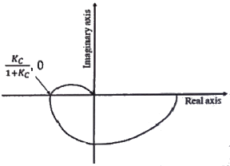
- 0.43
- 1.43
- 2.33
- 2.43
(정답률: 47%)
48. 비례-미분제어 장치의 전달함수 형태를 옳게 나타낸 것은? (단, K는 이득, τ는 시간정수이다.)
- Kτs
- K(1+1/τs)
- K(1+τs)
- K(1+τ1s+1/τ2s)
(정답률: 60%)
49.
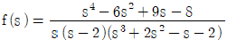
의 라플라스 변환을 갖는 함수 f(t)에 대하여 f(0)를 구하는데 이용할 수 있는 이론과 f(0)의 값으로 옳은 것은?- 초기치 정리 (Initial value theorem), 1
- 최종치 정리 (Final value theorem), -2
- 함수의 변이 이론(Translation theorem of function), 1
- 로피탈 정리 이론(L'Hopital's theorem), -2
(정답률: 42%)
50. 주파수 응답의 위상각이 0°와 90° 사이인 제어기는?
- 비례 제어기
- 비례-미분 제어기
- 비례-적분 제어기
- 비례-미분-적분 제어기
(정답률: 47%)
51. 전달함수가
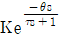
인 공정에 대한 결과가 아래와 같을 때, K, τ, θ의 값은?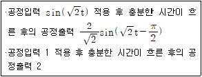
- K=1, τ=1/√2, θ=π/2√2
- K=1, τ=1/√2, θ=π/4√2
- K=2, τ=1/√2, θ=π/2√2
- K=2, τ=1/√2, θ=π/4√2
(정답률: 31%)
52. 되먹임제어에 관한 설명으로 옳은 것은?
- 제어변수를 측정하여 외란을 조절한다
- 외란 정보를 이용하여 제어기 출력을 결정한다.
- 제어변수를 측정하여 조작변수 값을 결정한다.
- 외란이 미치는 영향을 선(先) 보상해주는 원리이다.
(정답률: 44%)
53. 블록선도 (a)와 (b)가 등가이기 위한 m의 값은?
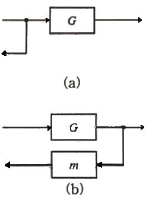
- G
- 1/G
- G2
- 1-G
(정답률: 53%)
54.
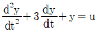
를 상태함수 형태 dx/dt=Ax+Bu 로 나타낼 경우 A와 B는?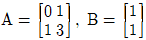
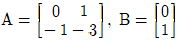
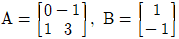
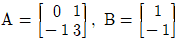
(정답률: 43%)
55. 아래와 같은 블록 다이어그램의 총괄전달함수(overall transfer function)는?
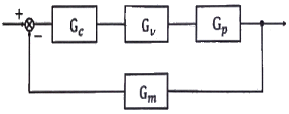
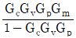
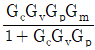
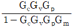
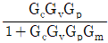
(정답률: 63%)
56. Routh법에 의한 제어계의 안정성 판별조건과 관계없는 것은?
- Routh array의 첫 번째 열에 전부 양(+)의 숫자만 있어야 안정하다.
- 특성방정식이 S에 대해 n차 다항식으로 나타나야 한다.
- 제어계에 수송지연이 존재하면 Routh법은 쓸 수 없다.
- 특성방정식의 어느 근이든 복소수축의 오른쪽에 위치할 때는 계가 안정하다.
(정답률: 56%)
57. 제어루프를 구성하는 기본 hardware를 주요 기능별로 분류하면?
- 센서, 트랜스듀서, 트랜스미터, 제어기, 최종제어요소, 공정
- 변압기, 제어기, 트랜스미터, 최종제어요소, 공정, 컴퓨터
- 센서, 차압기, 트랜스미터, 제어기, 최종제어요소, 공정
- 샘플링기, 제어기, 차압기, 밸브, 반응기, 펌프
(정답률: 38%)
58. 특성방정식이
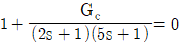
과 같이 주어지는 시스템에서 제어기(Gc)로 비례제어기를 이용할 경우 진동응답이 예상되는 경우는?- Kc=-1
- Kc=0
- Kc=1
- Kc에 관계없이 진동이 발생된다.
(정답률: 41%)
59. 적분공정()을 P형 제어기로 제어한다. 공정 운전에 따라 양수 τ는 바뀐다고 할 때, 어떠한 τ에 대하여도 안정을 유지하는 P형 제어기 이득(Kc)의 범위는?
- 0 ＜ Kc ＜ ∞
- 0 ≤ Kc ＜ ∞
- 0 ＜ Kc ＜ 1
- 0 ≤ Kc ＜ 1
(정답률: 30%)
60. 이상적인 PID 제어기를 실용하기 위한 변형 중 적절하지 않은 것은? (단, Kc는 비례이득, τ는 시간상수를 의미하며 하첨자 I와 D는 각각 적분과 미분 제어기를 의미한다.)
- 설정치의 일부만을 비례동작에 반영:

- 설정치의 일부만을 적분동작에 반영:

- 설정치를 미분하지 않음:

- 미분동작의 잡음에 대한 민감성을 완화시키기 위한 filtered 미분동작:

(정답률: 41%)
4과목: 공업화학
61. 포화식염수에 직류를 통과시켜 수산화나트륨을 제조할 때 환원이 일어나는 음극에서 생성되는 기체는?
- 염화수소
- 산소
- 염소
- 수소
(정답률: 57%)
62. 벤젠 유도체 중 니트로화 과정에서 meta 배향성을 갖는 것은?
- 벤조산
- 브로모벤젠
- 톨루엔
- 바이페닐
(정답률: 37%)
63. 양쪽성 물질에 대한 설명으로 옳은 것은?
- 동일한 조건에서 여러 가지 축합반응을 일으키는 물질
- 수계 및 유계에서 계면활성제로 작용하는 물질
- pKa 값이 7 이하인 물질
- 반응조건에 따라 산으로도 작용하고 염기로도 작용하는 물질
(정답률: 64%)
64. 다니엘 전지(Daniel Cell)를 사용하여 전자기기를 작동시킬 때 측정한 전압(방전 전압)과 충전 시 전지에 인가하는 전압(충전 전압)에 대한 관계와 그 설명으로 옳은 것은?
- 충전 전압은 방전 전압보다 크다. 이는 각 전극에서의 반응과 용액의 저항 때문이며, 전극의 면적과는 관계가 없다.
- 충전 전압은 방전 전압보다 크다. 이는 각 전극에서의 반응과 용액의 저항 때문이며, 전극의 면적이 클수록 그 차이는 증가한다.
- 충전 전압은 방전 전압보다 작다. 이는 각 전극에서의 반응과 용액의 저항 때문이며, 전극의 면적과는 관계가 없다.
- 충전 전압은 방전 전압보다 작다. 이는 각 전극에서의 반응과 용액의 저항 때문이며, 전극의 면적이 클수록 그 차이는 증가한다.
(정답률: 31%)
65. H2와 Cl2를 직접 결합시키는 합성염화수소의 제법에서는 활성화된 분자가 연쇄를 이루기 때문에 반응이 폭발적으로 진행된다. 실제 조작에서 폭발을 막기 위해 행하는 조치는?
- 반응압력을 낮추어 준다.
- 수증기를 공급하여 준다.
- 수소를 다소 과잉으로 넣는다.
- 염소를 다소 과잉으로 넣는다.
(정답률: 64%)
66. 질소와 수소를 원료로 암모니아를 합성하는 반응에서 암모니아의 생성을 방해하는 조건은?
- 온도를 낮춘다.
- 압력을 낮춘다.
- 생성된 암모니아를 제거한다.
- 평형반응이므로 생성을 방해하는 조건은 없다.
(정답률: 51%)
67. 황산 제조공업에서의 바나듐 촉매 작용기구로서 가장 거리가 먼 것은?
- 원자가의 변화
- 3단계에 의한 회복
- 산성의 피로인산염 생성
- 화학변화에 의한 중간생성물의 생성
(정답률: 41%)
68. 불순물을 제거하는 석유정제공정이 아닌 것은?
- 코킹법
- 백토처리
- 메록스법
- 용제추출법
(정답률: 38%)
69. 공업적으로 인산을 제조하는 방법 중 인광석의 산분해법에 주로 사용되는 산은?
- 염산
- 질산
- 초산
- 황산
(정답률: 49%)
70. 열가소성 수지에 해당하는 것은?
- 폴리비닐알코올
- 페놀 수지
- 요소 수지
- 멜라민 수지
(정답률: 58%)
71. 반도체 제조공정 중 원하는 형태로 패턴이 형성된 표면에서 원하는 부분을 화학반응 또는 물리적 과정을 통해 제거하는 공정은?
- 세정
- 에칭
- 리소그래피
- 이온주입공정
(정답률: 65%)
72. 순도 77% 아염소산나트륨(NaClO2) 제품 중 당량 유효염소 함량(%)은? (단, Na. Cl의 원자량은 각각 23, 35.5g/mol이다.)
- 92.82
- 112.12
- 120.82
- 222.25
(정답률: 30%)
73. 다음 중 옥탄가가 가장 낮은 것은?
- Butane
- 1-Pentene
- Toluene
- Cyclohexane
(정답률: 43%)
74. 폴리카보네이트의 합성방법은?
- 비스페놀A와 포스겐의 축합반응
- 비스페놀A와 포름알데히드의 축합반응
- 하이드로퀴논과 포스겐의 축합반응
- 하이드로퀴논과 포름알데히드의 축합반응
(정답률: 38%)
75. 1기압에서의 HCl, HNO3, H2O의 ternary plot과 공비점 및 용액 A와 B가 아래와 같을 때 틀린 설명은?
- 황산을 이용하여 A용액을 20.2wt% 이상으로 농축할 수 있다.
- 황산을 이용하여 B용액을 75wt% 이상으로 농축할 수 있다.
- A용액을 가열 시 최고 20.2wt%로 농축할 수 있다.
- 용액을 가열 시 80wt%까지 농축할 수 있다.
(정답률: 36%)
76. 석유 유분을 냉각하였을 때, 파라핀 왁스 등이 석출되기 시작하는 온도를 나타내는 용어는?
- Solidifying point
- Cloud point
- Nodal point
- Aniline point
(정답률: 38%)
77. 아미드(Amide)를 이루는 핵심 결합은?
- -NH-NH-CO-
- -NH-CO-
- -NH-N=CO
- -N=N-CO
(정답률: 35%)
78. 페놀(phenol)의 공업적 합성법이 아닌 것은?
- Cumene법
- Raschig법
- Dow법
- Esso법
(정답률: 40%)
79. 어떤 유지 2g속에 들어 있는 유리지방산을 중화시키는데 KOH가 200mg 사용되었다. 이 시료의 산가(acid value)는?
- 0.1
- 1
- 10
- 100
(정답률: 52%)
80. 요소비료를 합성하는데 필요한 CO2의 원료로 석회석(탄산칼슘 함량 85wt%)을 사용하고자 한다. 요소비료 1ton을 합성하기 위해 필요한 석회석의 양(ton)은? (단, Ca의 원자량은 40g/mol이다.)
- 0.96
- 1.96
- 2.96
- 3.96
(정답률: 47%)
5과목: 반응공학
81. 부피가 2L인 액상혼합반응기로 농도가 0.1mol/L인 반응물이 1L/min 속도로 공급된다. 공급한 반응물의 출구농도가 0.01 mol/L일 때, 반응물 기준 반응속도(mol/L·min)는?
- 0.045
- 0.062
- 0.082
- 0.100
(정답률: 50%)
82. 일정한 온도로 조작되고 있는 순환비가 3인 순환 플러그흐름반응기에서 1차 액체반응(A→R)이 40%까지 전화되었다. 만일 반응계의 순환류를 폐쇄시켰을 경우 변경되는 전화율(%)은? (단, 다른 조건은 그대로 유지한다.)
- 0.26
- 0.36
- 0.46
- 0.56
(정답률: 34%)
83. 비가역반응(A+B→AB)의 반응속도식이 아래와 같을 때, 이 반응의 예상되는 메커니즘은? (단, k_는 역반응속도상수이고 '*'표시는 중간체를 의미한다.)
(정답률: 44%)
84. 다음 그림은 기초적 가역 반응에 대한 농도 시간 그래프이다. 그래프의 의미를 가장 잘 나타낸 것은? (단, 반응방향 위 숫자는 상대적 반응속도 비율을 의미한다.)
(정답률: 53%)
85. 반응속도가 0.0⑤CA2mol/cm3·min으로 주어진 어떤 반응의 속도상수(L/mol·h)는?
- 300
- 2.0×10-4
- 200
- 3.0×10-4
(정답률: 37%)
86. Michaelis-Merten 반응(S → P, 효소반응)의 속도식은? (단, E0는 효소, '[ ]'은 각 성분의 농도, km는 Michaelis-Menten 상수, Vmax는 효소농도에 대한 최대 반응속도를 의미한다.)
(정답률: 39%)
87. 평형 전화율에 미치는 압력과 비활성 물질의 역할에 대한 설명으로 옳지 않은 것은?
- 평형상수는 반응속도론에 영향을 받지 않는다.
- 평형상수는 압력에 무관하다.
- 평형상수가 1보다 많이 크면 비가역 반응이다.
- 모든 반응에서 비활성 물질의 감소는 압력의 감소와 같다.
(정답률: 33%)
88. (CH3)2O→CH4+CO+H2 기상반응이 1atm, 550°C의 CSTR에서 진행될 때 (CH3)2O의 전화율이 20%될 때의 공간시간(s)은? (단, 속도상수는 4.50 x 10-3s-1이다.)
- 87.78
- 77.78
- 67.78
- 57.78
(정답률: 34%)
89. 액상 순환반응(A→P, 1차)의 순환율이 ∞일 때 총괄전화율의 변화 경향으로 옳은 것은?
- 관형 흐름반응기의 전화율보다 크다.
- 완전혼합 흐름반응기의 전화율보다 크다.
- 완전혼합 흐름반응기의 전화율과 같다.
- 관형 흐름반응기의 전화율과 같다.
(정답률: 43%)
90. 순수한 기체 반응물 A가 2L/s의 속도로 등온혼합반응기에 유입되어 분해반응(A→3B)이 일어나고 있다. 반응기의 부피는 1L이고 전화율은 50%이며, 반응기로부터 유출되는 반응물의 속도는 4L/s일 때, 반응물의 평균체류시간(s)은?
- 0.25초
- 0.5초
- 1초
- 2초
(정답률: 35%)
91. 공간시간이 5min으로 같은 혼합 흐름 반응기 (MFR)와 플러그 흐름 반응기(PFR)를 그림과 같이 직렬로 연결시켜 반응물 A를 분해시킨다. A물질의 액상 분해반응 속도식이 아래와 같고 첫 번째 반응기로 들어가는 A의 농도가 1mol/L면 반응 후 둘째 반응기에서 나가는 A물질의 농도(mol/L)는?
- 0.25
- 0.50
- 0.75
- 0.80
(정답률: 34%)
92. 비가역 1차 반응(A→P)에서 A의 전화율(XA)에 관한 식으로 옳은 것은? (단, C, F, N은 각각 농도, 유량, 몰수를, 하첨자 0(0)은 초기상태를 의미한다.)
(정답률: 54%)
93. 균일계 액상반응이 회분식반응기에서 등온으로 진행되고, 반응물의 20%가 반응하여 없어지는데 필요한 시간이 초기농도 0.2mol/L, 0.4mol/L, 0.8mol/L일 때 모두 25분이었다면, 이 반응의 차수는?
- 0차
- 1차
- 2차
- 3차
(정답률: 43%)
94. 단일 이상형 반응기(single ideal reactor)에 해당하지 않는 것은?
- 플러그흐름 반응기(plug flow reactor)
- 회분식 반응기(batch reactor)
- 매크로유체 반응기(macro fluid reactor)
- 혼합흐름 반응기(mixed flow reactor)
(정답률: 55%)
95. 액상반응이 아래와 같이 병렬반응으로 진행될 때, R을 많이 얻고 S를 적게 얻기 위한 A와 B의 농도는?
- CA는 크고, CB도 커야 한다.
- CA는 작고, CB는 커야 한다.
- CA는 크고, CB는 작아야 한다.
- CA는 작고, CB도 작아야 한다.
(정답률: 60%)
96. A→R인 액상반응의 속도식이 아래와 같을 때, 이 반응을 순환비가 2인 순환반응기에서 A의 출구농도가 0.5mol/L가 되도록 운영하기 위한 순환반응기의 공간시간(τ; h)은? (단, A는 1mol/L로 공급된다.)
- 3.5
- 8.6
- 18.5
- 133.5
(정답률: 34%)
97. 밀도 변화가 없는 균일계 비가역 0차 반응(A→R)이 어떤 혼합반응기에서 전화율 90%로 진행될 때, A의 공급속도를 2배로 증가시켰을 때의 결과로 옳은 것은?
- R의 생산량은 변함이 없다.
- R의 생산량이 2배로 증가한다.
- R의 생산량이 1/2로 감소한다.
- R의 생산량이 50% 증가한다.
(정답률: 34%)
98. A와 B의 기상 등온반응이 아래와 같이 병렬반응일 경우 D에 대한 선택도를 향상시킬 수 있는 조건이 아닌 것은?
- 관형반응기 사용
- 회분반응기 사용
- 반응물의 고농도 유지
- 반응기의 낮은 반응압력 유지
(정답률: 44%)
99. 플러그흐름반응기에서 순수한 A가 공급되어 아래와 같은 비가역 병렬 액상반응이 A의 전화율 90%로 진행된다. A의 초기농도가 10mol/L일 경우 반응기를 나오는 R의 농도(mol/L)는?
- 0.19
- 1.7
- 1.9
- 5.0
(정답률: 28%)
100. 회분식반응기에서 A의 분해반응을 50℃ 등온으로 진행시켜 얻는 데이터가 아래와 같을 때, 이 반응의 반응속도식은? (단, CA는 A물질의 농도, t는 반응시간을 의미한다.)
(정답률: 47%)